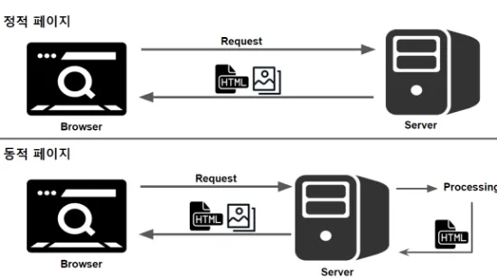

퍼블리크 정적웹사이트 전환 계획

✦ 요약설명 ✦
정적 웹사이트로의 전환을 통해, 콘텐츠의 질적 수준 향상 및 양적 성장을 도모하고, 분류•검색 체계 효율화 및 콘텐츠 신뢰성을 제고하며, 신속한 복구 체계 마련 및 근본적 보안 위협에 대응하고자 함.
1. 목적
- 콘텐츠 생산의 안정성 확보 및 유지보수의 편의성 제고를 위한 정적 웹사이트로의 전환
2. 추진배경
- 그동안 다양한 웹플렛폼 환경에서 콘텐츠 관리 경험 축적
- PHP로 개발된 설치형 블로그인 워드프레스의 경우, 다수의 모듈이 추가되면서 프로그램 구조가 복잡해지고 환경설정의 난이도가 높아짐에 따라 성능 최적화 및 유지보수에 많은 시간과 노력 필요
- 테터툴즈 엔진 기반의 서비스형 블로그인 티스토리의 경우, saas 서비스 특성상 사용자화에 제한이 있고 트래픽 유도 정책에 따른 스팸댓글 등 의도하지 않는 부작용 양산
- 그 결과 콘텐츠 생산에 집중할 수 있으며 관리가 용이한 웹사이트 개발 환경에 대한 필요성 제기
3. 그동안 추진경과
3.1. 2021
- 2021년 6월 도메인 등록
- 2021년 8월 wordpress 기반 웹사이트 cafe24.com에 개설
3.2. 2023
- 2023년 4월 AWS Lightsail에 Wordpress로 사이트 이전
3.3. 2024
- 2024년 8월 서비스형 블로그 tistory.com으로 이전
3.4. 2025
- 2025년 11월 정적 웹사이트 구축 사전검토 시행
4. 주요 방침
4.1. 정적 웹사이트 생성 도구 선정
- 쉬운 콘텐츠 작성 방식을 통한 콘텐츠 생산의 편의성 제공 여부
- 경량 아키텍쳐 및 최소한의 서버 자원으로 장기 운영 가능성
- 안정성, 지속적 업데이트, 신속한 빌드 및 배포 속도 등 보장
4.2. 메타데이터 생성 및 관리
- 구조적 탐색 및 유연한 검색 서비스 제공을 위해 카테고리 및 태그의 재구조화
- 갱신 즉시 카테고리 분류기준 및 태그 목록을 문서화하여 사이트 일관성 유지
4.3. 기술적 운영
- 외부도메인, SSL보안, CDN 서비스 제공 및 트래픽 보장 등 정적 웹서비스에 충실한 호스팅 서비스 선정
- 동적 서비스 제공 필요에 따른 요구사항은 외부 SaaS 자원 발굴
- 우선은 개발자용 무료 플랜을 이용하여 비용을 최소화하고, 안정적 현금 흐름이 생성된 후 호스팅 투자
5. 추진일정
| 구분 | 11월 3주차 |
11월 4주차 |
12월 1주차 |
12월 2주차 |
12월 3주차 |
12월 4주차 |
26년1월 1주차 |
|---|---|---|---|---|---|---|---|
| 계획 수립 및 웹사이트 생성 도구 기술 검토 |
⚫ | ||||||
| 적용 사례 조사 및 개념 검증 |
⚫ | ⚫ | |||||
| 웹사이트 생성 도구 확정 및 시스템 설치/환경설정 |
⚫ | ||||||
| 사이트 디자인 구성 및 메타데이터 (Front Matter, Category, Tag) 검토 |
⚫ | ⚫ | |||||
| 버그 수정 및 결과 보고서 작성 | ⚫ |
6. 기대효과
- 콘텐츠의 질적 수준 향상 및 양적 성장 도모
- 분류•검색 체계 효율화 및 콘텐츠 신뢰성 제고
- 신속한 복구 체계 마련 및 근본적 보안 위협 대응